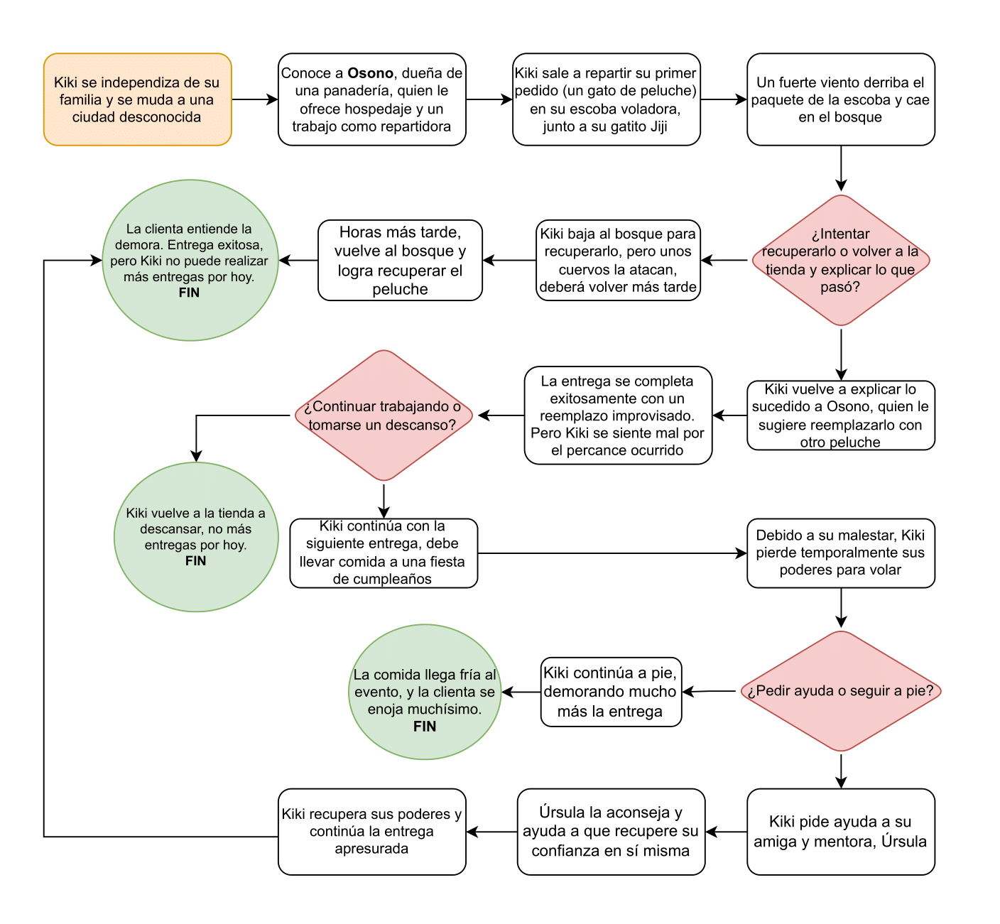

Información sobre la temática
Kiki’s Delivery Service (en japonés, Majo no Takkyūbin) es una película de animación japonesa dirigida por Hayao Miyazaki y producida por Studio Ghibli en 1989. Está basada en la novela homónima de Eiko Kadono y cuenta la historia de Kiki, una joven bruja de 13 años que debe partir de su hogar para vivir un año de independencia como parte de su entrenamiento.
Kiki llega a la ciudad costera de Koriko junto a su gato negro, Jiji, y decide abrir un servicio de mensajería a domicilio utilizando su escoba voladora. Durante la película, enfrenta desafíos como encontrar su lugar en la sociedad, adaptarse a su nueva vida y superar la pérdida temporal de su magia.
En el camino, forma amistades importantes, como con Osono, una panadera que la ayuda a comenzar su negocio, y Tombo, un joven entusiasta de la aviación. La película equilibra temas de autodescubrimiento, independencia y crecimiento personal, enmarcados en un mundo lleno de encanto y magia cotidiana.
El mensaje principal de la película resalta la importancia de la perseverancia, la confianza en uno mismo y la amistad, presentando una narrativa cálida y visualmente deslumbrante que ha encantado a audiencias de todas las edades.
El proceso de producción
Una vez que nuestro diagrama de flujo fue aprobado, pudimos continuar con la generación de nuestras imágenes hechas con IA (insertar carrousel de imágenes). Con todo esto, fuimos encaminando nuestro código.
Integrantes del equipo
Hayao Miyazaki
Director de la película.
Joe Hisaishi
Compositor de la música.